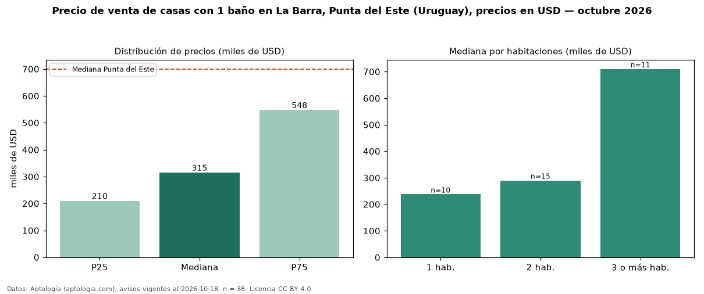

Precio de venta de casas con 1 baño en La Barra, Punta del Este (Uruguay), precios en USD — octubre 2026
En La Barra, Punta del Este (Uruguay), la mediana de precio de venta de casas con 1 baño es USD 315.000, según 38 avisos vigentes. Eso es 54 % menos que la mediana de todas las casas en venta de La Barra (USD 690.000, n = 614); este segmento reúne el 6 % de esos avisos. Por metro cuadrado, la mediana es USD 2.853/m² (n = 31), 5 % por debajo del conjunto de referencia (USD 3.000/m²). La mitad central de los avisos va de USD 210.000 a USD 547.500 (razón 2,6), una dispersión alta. El área mediana anunciada es 144 m². El segmento con más oferta es el de 2 habitaciones (15 avisos, mediana USD 290.000); pasar de 1 habitación a 3 o más habitaciones cambia la mediana +199 %. La mediana de todas las casas en venta de Punta del Este es USD 700.000 (−55 % de diferencia). Datos: Aptología (aptologia.com), CC BY 4.0 — https://www.aptologia.com/uy/venta/punta-del-este/la-barra. Archivos: PDF, CSV con las cifras y gráfica PNG.

| Avisos únicos | 38 |
|---|---|
| Percentil 25 | COP 210.000 |
| Mediana | COP 315.000 |
| Percentil 75 | COP 547.500 |
| Mediana por m² | COP 2.852 |
Fuente: avisos vigentes de portales inmobiliarios recopilados por Aptología, deduplicados (mínimo 30 avisos únicos por celda). Precios pedidos, no cerrados. Fecha: 2026-10-18.